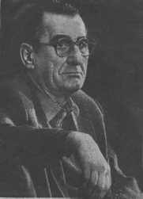

``Литературная газета'' 9 мая 1990 г., N19(5293), стр.9
Вячеслав Кондратьев
ПАРАДОКСЫ ФРОНТОВОЙ НОСТАЛЬГИИ
У фронтового поэта Юрия Белаша есть стихотворение под названием <<Что всего страшнее на войне>>. Один солдат говорит, что танки, другой, что бомбежка, третий про артобстрел, а четвертый, <<табачком дымивший в стороне, и такой вдруг сделал вывод твердый: - Ну зачем вы говорите без толку? Ведь всего страшнее на войне - это когда, братцы, нет махорки...>> Для меня же, испытавшего все, о чем спорят солдаты Ю. Белаша, самым страшным оказалось то, что я увидел в первый же рассвет на передовой, - раздетые до нижнего белья трупы наших солдат. Белье сливалось со снегом, а четко видны были лишь головы, кисти рук и ступни ног. Словно бы разъятые от тела, они страшными темными пятнами увиделись нам сквозь предрассветную серую дымку, и вид их ударил в сердце острой, не проходящей до сих пор болью...
Раздеты были все, кто лежал на передовой. На поле же боя раздеты были лишь те, кто находился вблизи, а те, кто дальше, до которых не добраться трофейным командам, остались одетые, вроде бы не такие жалкие, не такие ненужные... И подумалось тогда: пусть лучше убьют поближе к немцам, забоятся трофейщики туда ползти, хоть будешь лежать не опозоренным этим раздеванием. Хотя умом понимал, что не хватает нам всего, что нужно армии даже такое, пробитое пулями и осколками, окровавленное обмундирование, но душа не принимала: смерть для нас не превратилась в обычное, привычное, что будет всегда рядом, она была еще каким-то таинством, а покойник - чем-то святым, а потому раздевать его, тащить волоком в братскую могилу казалось святотатством... И надо сказать, что притерпевшись ко многому на войне, к этому так и не привык...
Война окончилась 45 лет назад и уже реже снится по ночам, а снилась она раньше часто, особенно до тех пор, пока я не съездил подо Ржев, на свою бывшую передовую, где и через двадцать лет после боев в этих местах лежали в лесу останки, одни уже только черепа тех, кто был со мной здесь, с кем, может, хлебал из одного котелка, с кем курил одну самокрутку из сухих прошлогодних листьев, так как с нами тоже случилось самое <<страшное на войне>>, по выводу четвертого солдата из стихотворения Ю. Белаша, - не было махорки, как не было и хлеба, а лишь по сухарю на брата на день, как не было и хорошего навара, кроме жидни-пшенки по полкотелка на двоих... Тогда, в шестидесятых годах, фронтовая ностальгия навалилась на меня, она-то и заставила поехать на места боев, заставила протопать двадцать верст пехом от ст. Чертолино до бывшей передовой, по грязи и распутице. Ностальгия и сны, потому что снилось мне чаще всего именно возвращение в те места, где я начал войну. В снах я не узнавал бывшую передовую, наяву она показалась мне такой же, потому что в лесу встречались на каждом шагу каски, котелки, солдатские ботинки, цинковые ящики из-под патронов, снарядные гильзы, заржавевшие рубашки гранат РГД, а кое-где торчало, тоже заржавевшее, оперение невзорвавшихся немецких мин...
Необъясним феномен фронтовой ностальгии, которая томит всех нас, то отпуская на время, то схватывая снова, будто бы было на войне что-то хорошее, светлое - о чем стоит тосковать... Виктор Астафьев, воевавший рядовым, где-то писал, что, кроме непосильной работы, непроходимой усталости, он ничего на войне не знал. Добавлю к этому еще тяжелый невпроворот фронтовой быт, то в холоде, то в голоде, то в грязи, то в пыльной духоте, бесконечные ночные переходы, то марш-броски и постоянный недосып на передовой, где устраивали раннюю побудку немецкие минометы, а ночью не давали спать нежданные артналеты... А ежечасное ожидание смерти или какого-то страшного ранения, легкое-то - пусть, этого не боишься, даже радуешься, что будет небольшой передых, отваляешься в недалеких тылах в санбате или фронтовом эвакогоспитале, отоспишься, а может, и отъешься малость...
Так что же вспоминаешь, о чем тоскуешь?.. О фронтовом братстве, о солдатской дружбе? Да недолгая-то, как правило, оказывалась дружба. Не успеешь только сойтись с кем, сблизиться, как ранит его или убьет, ведь короткий век у солдата на передовой, хорошо, если на две недели хватит, а уж месяц-два пробыть в боях - это уж <<перебор>>. За это время так доходишь, что одна лишь мыслишка - убило бы или ранило поскорей, чтоб не мучиться, есть же предел человеческому терпению и силам... И еще угнетало нас на переднем крае, что не жалели нас командиры, что бросали в необдуманные, заведомо обреченные на безудачу наступления, что воевали мы, не считаясь с потерями, а побед добивались <<любой ценой>>... Сейчас-то думаешь, скольких положили зазря. Из-за неумения, из-за амбиций, из-за того, что брали города к праздникам... И всегда, всегда, - любой ценой! А сколько могли бы жизней сохранить, воюя хотя бы чуть умнее, чуть расчетливее, чуть больше жалея людей... Нет, не жалели, как мы жалели их в 17-м, в 21-м, в 29-м, в 37-м, а уж на войне сам Бог не велел жалеть, победа-то важнее. У нас всегда важнее всего какие-то результаты, а не люди. Людей в России навалом, хватит...
Так откуда же эта ностальгия, почему бередит она наши души? Может, потому, что пришлась, война на пору нашей юности? Так испохабила война нашу юность, порвала на клочья, вырвала из жизни самые лучшие годы, не говоря уж о том, что в живых из нашего поколения остались, дай Бог, пятеро из ста, ведь в первые же месяцы войны весь удар немецких войск приняла кадровая армия, состоящая из ребят 19-го 20-го, 21-го и 22-го годов рождения, сколько из них убито - до сей поры неведомо, в плен попали миллионы, а сколько из них выжило?.. Нет, не в юности, наверное, дело. Она, быть может, лишь помогла нам выдюжить, вытерпеть эту так варварски ведущуюся войну, и не столько физическими силами, сколько нашим юношеским идеализмом, так бездарно и подло используемым Сталиным, нашей верой в справедливость войны, которой - мы не знали этого! - можно было бы и избежать или принять ее в более для нас благоприятных условиях. Мы вообще тогда ничегошеньки не знали, хотя нутром почувствовали: что-то с этим пактом с Германией не так и не то. Не ведали и о том, что коллективизация в России, так напугавшая немецкого бауэра, способствовала приходу Гитлера к власти, что <<удружил>> Сталин нацизму, расколов социал-демократическое движение, лишив его союза с компартиями, ослабив этим и сами компартии. Многого мы тогда не знали, и это неведение помогало воевать, все для нас было ясно и просто - фашизм напал на нашу страну, надо воевать, надо победить его...
Может быть, после Победы зажили хорошо? Увы, нет. Надежды наши, что после войны начнется распрекрасная жизнь, что Сталин, убедившись в верности народа - а какое еще большее доказательство требовалось, чем победа в войне? - прекратит репрессии, тем более в войну они приутихли, - не оправдались. Вернувшиеся инвалидами, особенно те, кто не работал до войны, получили такие нищенские пенсии, которых не хватало даже на то, чтоб выкупить карточный паек... Тут попалась мне <<Литературка>> 1948 года о статьей о плохом качестве протезов, и вот почти полвека прошло - и те же разговоры, уже для новых инвалидов - афганцев. Мой школьный друг из-за того, что сломался у него протез, упал, сломал вторую ногу, превратившись на несколько месяцев в лежачего больного, а что было бы, если бы не срослась кость?.. Денежная реформа 1947 года подняла цены на продукты в два раза по сравнению с довоенными, а зарплата осталась прежней. Правда, полны были магазины, но покупать не на что... В конце 48-го и в 49-м начали прибирать тех из политических, кого освободили в 47-м, тех немногих, кому не добавили срок в лагерях, и тех, кого сактировали по болезни. Снова арестовывали, производили обыски, а потом в телятниках вывезли в Красноярский край, выкидывая частями на сибирских станциях и полустанках на вечную ссылку. В эти же годы стали сажать бывших военнопленных, прошедших причем проверки в 45-м, и отправлять в лагеря. Я думаю, сам Сталин не верил в предательство этих людей, просто надо было избавить общество от тех, кто много знал: политические могли рассказать, и как велось следствие, и о лагерной жизни, бывшие в плену прошли обработку пропагандой и со стороны немцев, и со стороны вербовщиков РОА, которые во многом их просветили - о коллективизации и о 37-м годе. К тому же в те годы прокатилась волна арестов в высших учебных заведениях, причем бывших фронтовиков... И все наши надежды, что изменится что-то, рухнули. Нет, не было в нашей послевоенной жизни светлого, о чем можно было бы вспоминать с ностальгической грустью, считались мы <<потерянным поколением>>, хотя говорить об этом не полагалось: у нас, дескать, такого явления быть не может... Для нас тогда многое было совсем непонятным, да и неудивительно: мы родились в этом режиме, другой жизни не знали, если не считать туманных воспоминаний о последних годах нэпа, когда в Охотном ряду ломились прилавки от всяческих продуктов. Но четче помнили мы о карточках, об очередях, о синих кроличьих тушках, названных в народе <<сталинскими быками>>.
Да, мы тогда почти ничего не понимали, да и откуда, когда многие сокровища человеческой мысли были для нас закрыты, а ведь прочти мы тогда хотя бы строчки из <<Несвоевременных мыслей>> М. Горького о том, что <<народные комиссары относятся к России как к материалу для опытов, русский народ для них - та лошадь, которой ученые-бактериологи прививают тиф для того, чтоб лошадь выработала в своей крови противотифозную сыворотку...>>, мы бы поняли кое-что в жизни... Не знаю только, лучше было бы все знать или находиться в неведении? А между прочим, та <<сыворотка>>, выработанная <<жестоким>> и заранее обреченным на неудачу <<опытом>>, по словам Горького, явилась - что мы сейчас видим - сильным иммунитетом против бредовых идей <<земного рая>>, всемирного <<счастья>>, в которое надо <<загнать человечество железной рукой>>. Только больно и горько, что опыт этот стоил так дорого, стольких человеческих жертв, что сейчас среди почти трехсотмиллионного народа не можем найти альтернативы главе правительства.
Итак, находясь в полном неведении, мы быстро смирились с послевоенной жизнью, главное же - война позади, мы остались в живых, а впереди - заманчивые дали коммунизма, в котором будет все <<по потребностям>>. Сказать, что верили мы в это безоглядно, конечно, нельзя. Но все же надеялись на что-то лучшее.
Мы и сейчас снова надеемся на лучшее, не особенно вникая в печальный парадокс наших дней, который мало что оставляет от надежд. А парадокс в том, что партия (ее лучшая часть), провозгласив перестройку, сама же и тормозит ее в лице другой, скажем, не лучшей ее части, которая никак не может расстаться с монопольной и бесконтрольной властью, а потому не может или не хочет отказаться и от тех коммунистических мифов, которые ей эту власть и дали, и которой партия пользовалась более 70 лет, ни за что не отвечая и доведя страну до краха. И если партия не отмежуется от своей реликтовой части, тянущей ее назад, то мне кажется совершенно неизбежным, что при свободных выборах и при наличии к тому времени каких-нибудь других, более радикальных партий, она потерпит такое же сокрушительное поражение, которое потерпели коммунистические партии Восточной Европы. А мне бы не хотелось этого, не потому, что я питаю нежные чувства к <<родной и любимой>>, а потому, что вижу в современной партии реальные и свежие интеллектуальные силы, способные повести страну к подлинной демократии и к радикальным экономическим реформам. Разумеется, при условии полного отказа от обветшалой и оказавшейся гибельной для страны идеологии...
Однако и с ней дело обстоит не так-то просто. Письма, которые я получил от читателей по поводу своей статьи <<Поговорим об идеалах>>, показывают, что из сознания многих людей еще не ушла вера в коммунистические идеалы. Сколько бы сейчас ни говорилось и ни писалось об утопичности этих идеалов, надо признать, что они делали скудную и серую жизнь простого человека в какой-то мере одухотворенной. Ведь сознание, в котором существует постулат <<не для себя живем, а для будущего>>, - это сознание альтруистическое, сходное с религиозным, которое, несомненно, как-то осмысливает жизнь человека и его нельзя совсем сбросить со счетов.
Мы почти все сегодня понимаем, что рынок неизбежен, что надо приблизиться к живой, настоящей жизни и отречься от схем и абстракций, но как убедить в этом значительную часть народа, который, несмотря, на то, что жил и живет в материальном отношении плохо и бедно, существовал все же в некоем психологическом комфорте, имея ясные и понятные цели...
Но я отвлекся от войны, которая, несмотря ни на что, вспоминается воевавшими хорошо, потому что все страшное и тяжкое в физическом смысле как-то смылось в памяти, а осталась лишь духовная сторона, те светлые и чистые порывы, присущие войне справедливой, войне освободительной. Была в войне одна странность - на ней мы чувствовали себя более свободными, нежели в мирное время. Казалось бы, что за свобода у солдата, над которым все, начиная с ефрейтора, - начальники?.. Конечно, когда <<гонят>> в наступление и топаешь по полю, подставляя себя под пули и осколки, тут ты <<пушечное мясо>>, тут от тебя мало что зависит, но если повезет и дойдешь до окопов противника, вот там ты можешь себя показать, там ты сам себе голова. Там тобой никто не командует, там многое в твоих руках, если не все. Ну, и в обороне тоже нужны и ум, и смекалка. Есть у меня рассказ <<Знаменательная дата>>. Его герой, бывший солдат Отечественной, говорит своим собутыльникам, тоже ветеранам:
<<Ну вот, взять меня, например, токарь я сейчас, скажу, не хвастаясь, неплохой, но, предположим, уйду со своего завода, и ничего от этого не случится, ничего не изменится, поставят другого работягу, и будет тот вкалывать, а на войне... Нет меня на левом фланге с ручником - что будет? А то, что прорвется фриц в этом месте! Там я задержу гада! Не пройдет, подлюга! На войне я был до необходимости необходим. И не всяким меня заменить можно было. Вот предположим, что вместо меня на том левом фланге с тем же ручником другой солдат. И уже уверенности нет, что он немца задержит - и глаз другой, и смекалка, и характер послабже, может... Там такое чувство было, словно ты один в своих руках судьбу России держишь... Ведь верно... А сейчас... есть я, нету меня, все по-обычному течет>>.
Да, в мирной жизни в нашем обществе так и было: <<есть я, нету меня>>, <<все по-обычному течет>>, так как ничего от отдельной личности в нашем родном государстве не зависит. А на войне было по-другому: там каждый чувствовал свой личный вклад в победу.
И еще одна степень свободы была у человека на войне - свобода от идеологии. Хотя война и велась под привычными советскими лозунгами и призывами, хотя и кричали порой солдаты по инициативе политруков <<За Родину, за Сталина!>>, но не за Сталина, разумеется, мы воевали. Об этом хорошо сказано у того же Юрия Белаша:
Если признаться честно -
меньше всего в окопах мы думали
о Сталине.
Господа бога вспоминали чаще.
Сталин
никаким боком не прикладывался
к нашей солдатской войне
и говорить о нем -
просто не находилось повода.
И если бы не газеты.
право слово, мы бы так и забыли
эту, не встречавшуюся в русском языке
фамилию.
Здесь кстати сказать, что Сталин еще до войны стал поминать <<великих предков>>, в преддверии ее он вполне справедливо возлагал больше надежд на русский патриотизм, чем на идеологию.
Да и слишком тонка была эта идеологическая пленка в сознании народа, всего двадцатилетней протяженностью, перед извечным народным чувством любви к Отечеству и извечным стремлением защищать свою землю. Поэтому советская идеология, на мой взгляд, почти не играла никакой роли в Отечественной войне, правильно так названной, потому как по своей внутренней сути таковой и являлась. И тут был бы Сталин, не было бы его - русский солдат воевал бы так же беззаветно, так же мужественно, как воевал во всех войнах, которые приходилось вести нашей стране.
А вот это - <<такое чувство было, словно ты один в своих руках судьбу России держишь>>, - есть же не что иное, как истинное и подлинное чувство гражданина, ответственного за свое Отечество. Мне думается, этим и объясняется фронтовая ностальгия, потому что война была тем временем, когда человек брал выше себя самого, ощущая, что он <<до необходимости необходим>> своей Родине, чувствуя личную ответственность за ее судьбу.
Но, победив фашизм, освободив от него Европу, мы вернулись все же не победителями, точнее, мы чувствовали себя ими так недолго, пока на что-то надеялись, а когда надеждам не суждено было сбыться, разочарование и апатия, которые мы тогда для себя объясняли усталостью и спадом после нечеловеческого напряжения военных лет, напали на нас... Понимали ли мы тогда, что, спасая Родину, Россию, мы спасли и сталинский режим? Наверное, нет... Но даже если бы в войну мы все понимали, то все равно воевали бы так же, предпочтя свой, доморощенный тоталитаризм чужеземному, гитлеровскому, потому что насилие от своих сносить легче, чем от чужих...
Ну, а освобождение Европы, чем мы гордились в 48-49-х годах, обернулось не освобождением - сталинская рука простерлась и над странами так называемой народной демократии. Это-то мы тогда поняли, несмотря на пьесы вроде <<Заговора обреченных>> Вирты или <<Под каштанами Праги>> Симонова.
Да, война почти перестала сниться мне, но горькие и все же светлые воспоминания о ней не покинули меня. Война оказалась для нас самым главным делом нашего поколения, и тут ни убавить, ни прибавить. Тот чистый порыв любви к своей Отчизне, тот жертвенный накал и готовность отдать жизнь за нее незабываемы, такого больше не было никогда. Недавно, когда я разбирал архив, мне попались мои письма матери с Урала, где формировалась наша стрелковая бригада, которые она сохранила. Я абсолютно не помнил, что и о чем я ей тогда писал, а потому с интересом стал читать. И что же - в них я увидел, как довольно спокойно я подготавливал себя и мать к возможной смерти, писал, что погибнуть у стен родного города не страшно, что самое главное не допустить немцев в Москву... И так далее, в таком же романтическом, но более или менее трезвом духе, потому что, прослужив уже два года в армии, я знал, что такое пехота, в которой мне доведется воевать, знал, как мало шансов остаться в живых... И готовил себя и мать. И удивила меня в этих старых письмах какая-то примиренность со смертью, готовность к ней. А был мне 21 год от роду... Разве забыть такое?
А подобных писем было миллионы, с фронта в тыл и с тыла на фронт, и во всех - вера в победу, готовность отдать за нее жизнь. Не клялись в любви к России, не били себя в грудь - просто умирали за нее. Вот этой бы скромности и тихости чувств нашим новоявленным патриотам, большинство из которых еще ничего не сделали для России существенного, в которых за всеми их заклинаниями больше видится не любовь к России, а любовь к себе - русскому, будто бы это не случайность рождения, а какая-то особая заслуга...
Меня не очень печалит, что к 45-летию Победы не сооружен еще монумент, что нет памятников военачальникам, даже самому Жукову, кстати, назвавшему русского солдата <<творцом Победы>>. Меня угнетает, что к этой дате мы так мало сделали для того, чтобы эти <<творцы Победы>> - инвалиды и ветераны Отечественной, отдавшие столько сил и крови для спасения Родины, которых осталось не многим более 5 миллионов, - последние годы своей тяжкой, полной лишений жизни, дожили по-человечески.
Ну, а, мне уже до конца дней не забыть <<самое страшное>> на войне, что я увидел в первый же день на передовой, - раздетых до исподнего наших убитых солдат, раскиданных повсюду, острую боль и жалость, ударившие в сердце, а потом, через неделю-две, - неестественное, вялое равнодушие к каждодневным потерям, к стонам раненых: страшное привыкание к убийству людей людьми, ставшее обыденным, вроде бы нормальным образом жизни человека на переднем крае.
Не дай Бог, чтобы такое повторилось когда-нибудь.